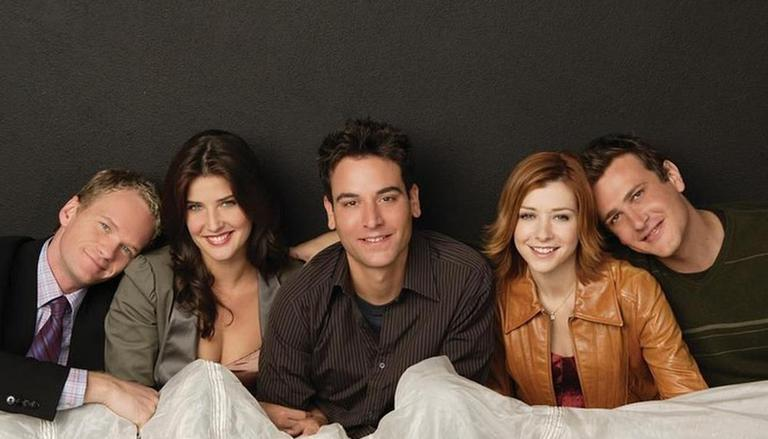
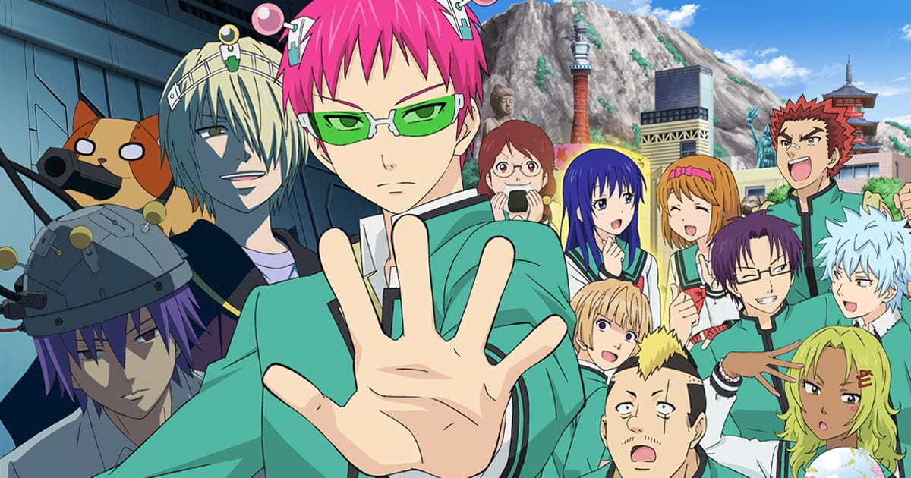
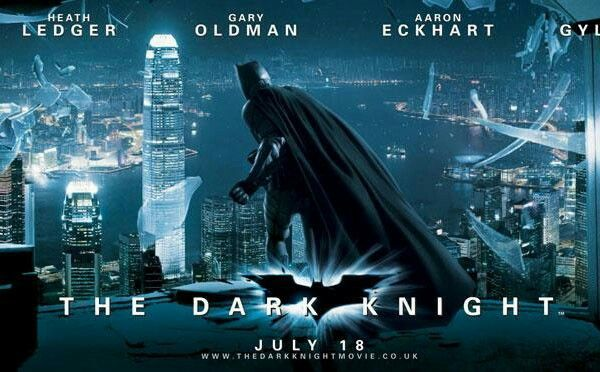
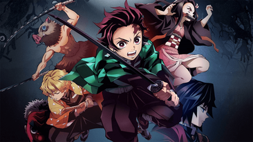

Welcome to the recent Reviews
How I met your mother
How I Met your mother is a romantic comedy that will take you on a journey like you were apart of the “gang”. In season one we observe a lot of different unique characters which is based on the actor’s true personalities. The gang consist of 5 different characters who are all unique in their own way and unique character development. Set in New York City Ted, the protagonist and his friends have crazy adventures while on his way to finding his true love. The show is a frame story, which is a story within another story. No story is the same and will have you laughing the whole season.
The Disastrous Life of Saiki K
What seems like a boring anime with a pink haired protagonist on surface level, The Disastrous Life of Saiki K surprises you with an interesting take on what it’s truly like being an all powerful being trying to navigate high school life. The plot centres around Kusuo Saiki and his desire for a peaceful and average lifestyle, however the daily antics of his high school friends and surrounding community get him in situations that require the use of some of his many abilities and powers (you just have to watch it to know how many). This entire story plays out while there is an underlying threat of the world being destroyed (which Saiki is preventing through his ability to revert things to their original state temporarily, again you just have to watch it to understand the extent of his powers) which I thought provided a well thought out and creative twist to an otherwise mundane comedy anime. The one problem this anime does have is it’s lack of memorable cast surrounding Saiki (other than the main supporting characters), due to an overplayed use of a new transfer student course of events, however I feel that they account for this weakness by having the new students coming in be given supernatural abilities like talking to ghosts or telling peoples future. Overall, I feel that this anime is a must watch and primarily falls short in the aspect that a new season hasn’t come out yet!
The Dark Knight
Once again Christopher Nolan has shown his movie making prowess with the lastest addition to the batman movie. Heath Ledgers joker performance was out of this world and the movie will for sure be highly regarded by comic lovers.
Demon Slayer
Action packed filled with emotions tells a tale about the protagonists goal on saving his little sister. Disaster struck for Tanjiro making his way back from providing ends meet for his family as Tanjiro sees his family dead lying on the ground. However, he managed to find one of his family members alive but not stable condition as she was turned to a demon. Tanjiro made it as his goal to do whatever it takes in order to revert his sister back to normal. Tanjiro goes on a journey and becomes a demon slayer to find the cure for his sister. The anime gives watchers the exhilarating feeling on Tanjiro's determination on to protect the only family he has. As well as the amazing animation which makes the fights more exciting to watch. However, the one problem is that the anime has is the character development. The characters have become a generic shounen character where the character acquiring new things to be able to successful in their goal. Overall, I feel like this anime has a great animation which results into sucking in the viewer, but the poor character development makes the anime fall short on the potential it has to become one of the best animes to be released this decade.
Bleach

Bleach is a Japanese anime that was created by Tite Kubo. Bleach is a Shonen anime that tells a story of a fifteen-year-old Ichigo Kurosaki, a high-school student who can talk and see the dead. With the amazing power that was gifted to Ichigo, he was later introduced to Rukia Kuchiki who has been sent to the living world to complete the task of killing the dead who can harm the living. After an unfortunate scene that led to Rukia's failure, it led to Ichigo stealing her powers and becoming a Shinigami (Known as killing the evil dead). The story continues as Ichigo is introduced into a new life of becoming a Shinigami and must take on the task of killing the evil and protecting the living world with other Shinigami’s. This creative anime has been made in 2004 and had finally finished in 2012 with a span of over 350 episodes.
Below you will find the recent reviews and there ratings
| Movie Title | Release date | Rating /10 |
|---|---|---|
| Suicide Squad | 2021 | 5/10 |
| Shawshank redemption | 1998 | 9.7/10 |
| The Dark Knight | 2008 | 9/10 |